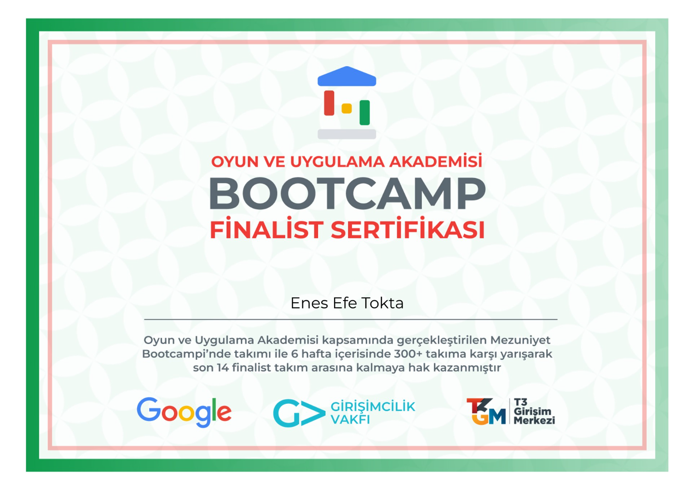
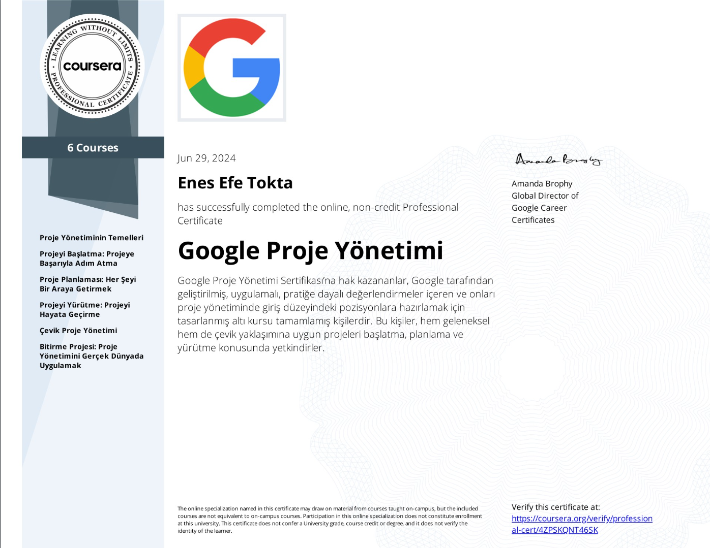

My academic journey and professional certifications
Atatürk University
2023 - 2027
Bachelor's degree program focusing on software development, database management, and information systems.
Game and Application Academy
2024
In the Graduation Bootcamp organized within the scope of the Oyun ve Uygulama Akademisi, he competed with his team against 300+ teams in 6 weeks and qualified to be among the last 14 finalist teams.
2024
I successfully completed Google's comprehensive Project Management course on Coursera, which offers in-depth training in key areas such as project planning, risk management, and team dynamics. By reinforcing theoretical knowledge with hands-on projects, I gained the ability to manage my projects more effectively and efficiently. This course, taught by Google's experienced instructors, has significantly improved my professional skills.
Pluralsight
2023
Advanced concepts in C# programming including async/await, LINQ, and design patterns.
Self-Learning & Professional Experience
2023 - Present
Proficient in Git version control system and GitHub collaboration platform, managing code repositories, branches, and pull requests effectively.
Professional Development
2023 - Present
Experience with various database systems including SQL, PostgreSQL, and MongoDB, implementing efficient data storage and retrieval solutions.
Professional Development
2023 - Present
Practical experience with Docker containerization, enabling consistent deployment environments and streamlined development workflows.